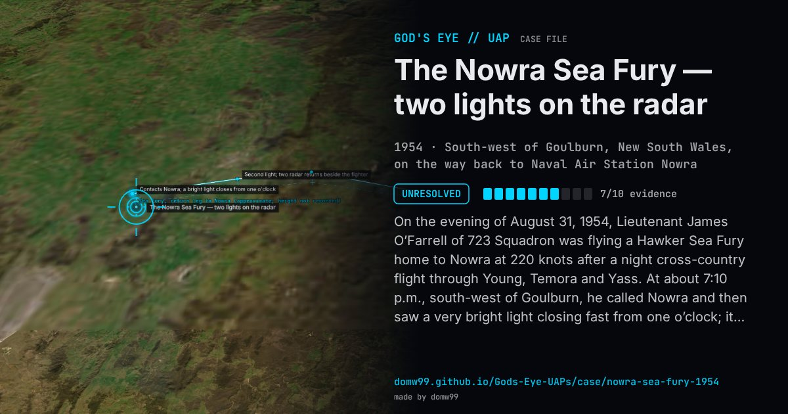

The Nowra Sea Fury — two lights on the radar

On the evening of August 31, 1954, Lieutenant James O’Farrell of 723 Squadron was flying a Hawker Sea Fury home to Nowra at 220 knots after a night cross-country flight through Young, Temora and Yass. At about 7:10 p.m., south-west of Goulburn, he called Nowra and then saw a very bright light closing fast from one o’clock; it crossed ahead of him and took up station on his left, seeming to orbit. A second, similar light appeared at nine o’clock, passed about a mile in front and joined it. Close up he could make out only “a vague shape with the white light situated centrally on top”, a large dark mass with no other lights. He asked Nowra about other traffic; the radar operator, Petty Officer Keith Jessop, had two returns in company with the Sea Fury, and O’Farrell turned through 180 and then 360 degrees so that radar could pick out which return was his. The two lights re-formed and left to the north-east at great speed, and radar followed them for a while. O’Farrell landed at about 7:30 p.m., was examined by a surgeon commander and wrote a report that the Navy kept classified until 1982. J. Allen Hynek interviewed him in 1973.
Explanation
The Navy found no explanation. A minute paper at the Fleet Air Arm Museum records that no RAAF aircraft were nearby and that the only other aircraft in the area was a TAA Convair airliner, which does not account for two lights that crossed in front of the fighter and were painted beside it on radar. The Directorate of Naval Intelligence called the pilot “an entirely credible witness”.
What was seen
Shape: Two very bright white lights, each on top of a large, vague dark mass
Witnesses: Lt J. A. “Shamus” O’Farrell, RAN, the Sea Fury pilot; PO Keith Jessop on the Nowra radar; a ground witness
Duration: Several minutes
Sources
- National Archives of Australia — Flying saucers: fact or fiction?
- Bill Chalker — The “Sea Fury” encounter
- Ulladulla Times — Nowra had its own alleged UFO sighting
Browse
- Australia
- 1950s
- Unresolved
- Radar-visual cases
- Official government documents
- Military witnesses
- Pilot and aircrew witnesses
- Radar tracking
- Lights and fireballs